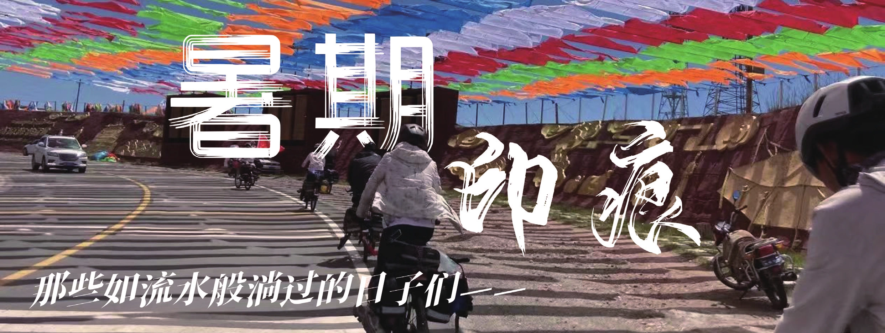
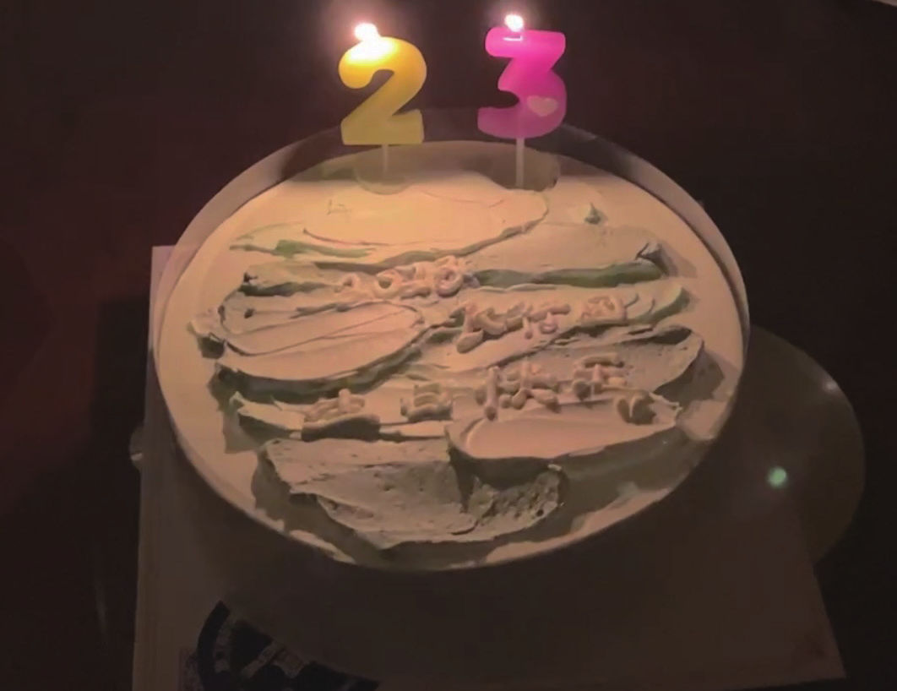
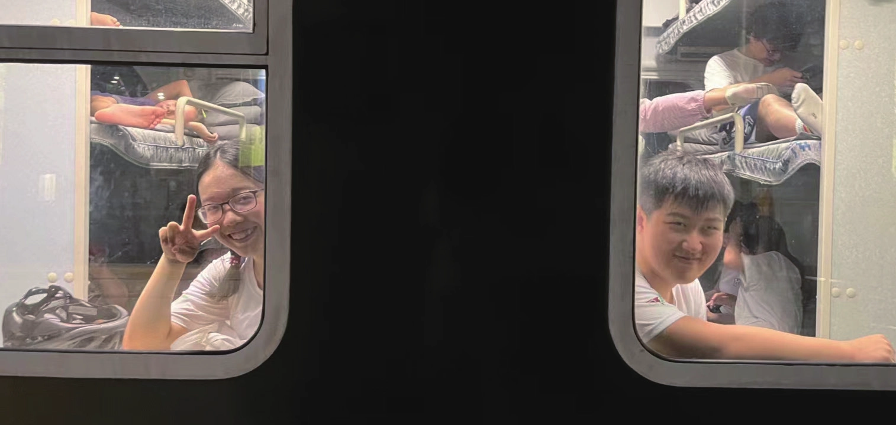
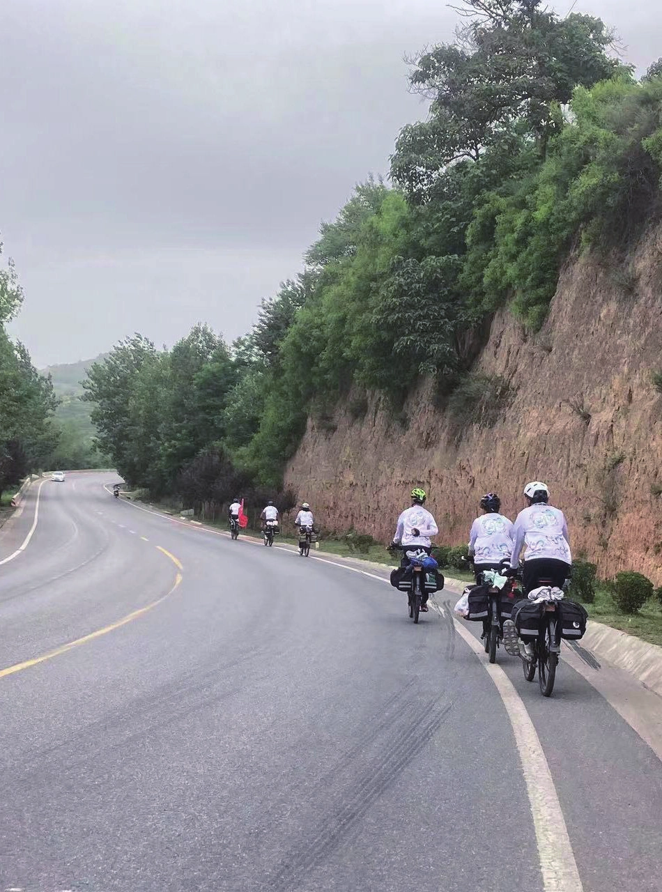
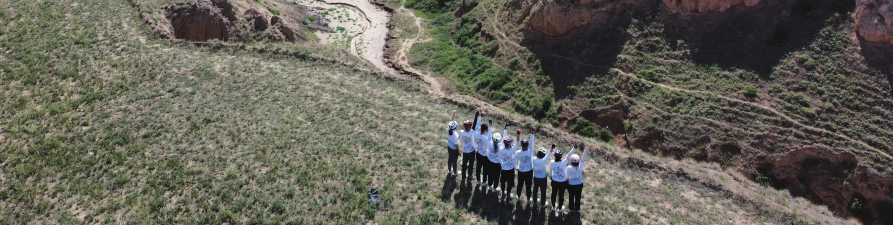
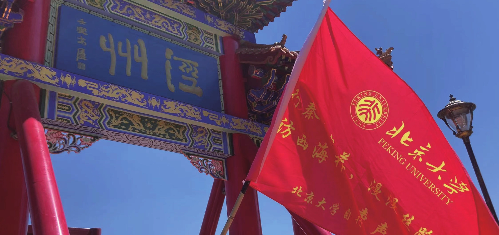

暑期印痕
原刊77
成团夜
早在春训还没结束的时候，对团长的猜测与期待就已经开始了。直到 6 月 2 日，在 318 教室，这一场“聚众赌博”才终于开盘，大家的猜测对象又从团长的人选转移到了自己的归属上。6 月3 日清早，一众暑期预备队员结束了互评。从互评结束到公布分团名单其实一共也就不到 60 小时，我却觉得漫长到像投了八辈子胎一样。直到6 月 5 日晚上，终于公布分团名单，最后 11 个人的名字被念出来，团儿带着我们猜排名并发现四姐和七哥不在，于是开始了我们的等待。那天的五四操场很凉快，习习的凉风吹拂，我们的暑期，开始了。
试车拉练
这样的天气连放坡都是炎热的，吹在身上的风跟凉爽毫无关系（这显得放坡前加衣服的一些会员有点冤种）。坡底有被太阳加热蔫了的西瓜和小卖部里带着些微凉意的瓷砖地板。
酷暑将我们拦在了坡底，同时也威胁着我们将后续的大村和东方红砍掉，有玩笑话说“高大东拉练”变成了“四分之三高不大不东拉练”，这玩笑听起来倒是挺乐呵，但毕竟证明着这次拉练的匆忙和缺憾，还是会让人有叹息的冲动。希望一切都会越来越好吧。
行前—西安


7 月 10 日晚，六哥小哥到达西安在火车站住下，翌日到火车站接站，众人一起从中铁快运拿车。叫一货拉拉，二姐和团儿两人负责 7 辆车，去了最先找好的酒店发现不合适，此时四姐小十也到达，再叫一辆货拉拉拉到冤种青旅（但当时暂时没人知道这一点）。
为何是怨种青旅呢，它只有一个没有灯没有热水的卫生间，空调其中一个形同虚设，另一个无法调节，最离谱的是没有锁，团儿评价：这和睡大街没有区别。好在睡前团儿在门口布下结界（用绑旗绳绑住了门），让我们睡觉有了一点安全感。
DAY1 西安－永寿
启程！呼风唤雨的飞行团！从青旅离开，对雨骑的不屑一顾在大雨中被冲了个一干二净。出门前我自信地把原本穿好的雨裤又脱了下来塞进了驮包，想着被淋湿在不舒服面前完全就是小玩具，后来又不得不狼狈地在大雨中的路口把雨裤重新套了上去。不过幸运的是二姐后来也和我一样狼狈地当街穿上了雨裤，让我稍微得到了一点安慰。
当然，“呼风唤雨”不可能只有雨，风也同样让人崩溃，一路的西北风让以西北为目标的路线显得异常冰冷，明明只有大平路、一个三级坡和一个四级坡，却比连夜爬完禅房放下去再全力冲刺一个妙峰还累。当六哥说出可能一路都是西北风的时候，小妹直仰天长啸：天杀的西安，我今日死的着实冤屈！
DAY2 永寿－长武
这一天的行程包含三个三级坡和一个四级坡，全程国道带来了相当舒适的骑行体验，晴朗的天气也让国道随之蜿蜒盘旋的山头相当温和的展现在我们面前。


下午，我们有了一个伴随着泾河，或者说逆着泾河前行的机会，在“泾渭分明”这个成语中被褒扬了上千年清澈的泾河水也已经完全和土地融为了一体。一件挺有意思的事，是在路途上的某些角度，以泾河为界，两边是两条短暂相遇的国道和高速，再往左看是高大的、横跨泾河的蓝色运输管道和与它同色调的不知名高大建筑，而再往右看却是残破程度不齐的庙宇、村落和不知名的低矮房屋。对比鲜明，遥遥相对。
DAY4 平凉休整
第一个休整日在大家殷切的期盼下终于到来了！由于在前三天的骑行中，包括笔者在内的众人基本都爆掉了，所以大家都很期待一次休整。尽管如此，大家仍然没有忘记我们的实践任务，并在前一天晚上完成了分工，分工情况如下。旅游住宿行业分级对比考察小组：小哥；按摩知识学习及体验小组：大姐、四姐；崆峒山宗教活动及地形地貌考察小组：二姐、五哥、六哥、小十；必备物资采购组：团儿、小弟、小妹；高质量休整效率研究小组：七哥。而具体每个小组的研究报告，将在论坛“飞行团暑期日志”中正式公布。
晚饭和团会一起举行。首先团儿和众人就大姐刚刚点的米酒是不是酒进行了友好的讨论。最终不了了之，米酒也被倒掉了（虽然是倒进了大姐的肚子里）。国王与天使的谜底也在这里揭晓。二姐是众人猜测是天使最多的，而四姐的愿望应该说被满足的最出乎意料。她想要大家推荐书给她，小十找到了笔者，于是在笔者的策划下，团儿、小哥、七哥和五哥为她推荐了朗道理论物理、量子力学、广相和《万有引力新论》。四姐显然非常开心。
DAY8 定西－兰州
本来以为出门要下雨，结果一看是个大晴天，非常欣喜。虽然六哥说有一片云还是什么东西（反正是个地理学名词）在从兰州方向向我们所在的定西飘来，路上总要遇到的，但今朝有酒今朝醉，出发无雨还是值得庆贺。


随后爬第一个坡，大姐的变速不太顺畅，后旗小分队停下来去调整，据说禹坤煜调完以后回到原位发现他车没了，原来是掉进了沟里。隧道口显示自行车禁止驶入，但是我们毕竟是三轴载货车，不能简单归为普通自行车之列，还是义无反顾地进入了隧道。
午饭点是“爆炒牛犊肉”，令人惊奇的是我们竟然真的吃到了牛肉，而不是像上次在“鸡煲”店甚至吃不起鸡煲，前站还购买了美味的桃子，虽然团儿后续表示不是很好吃，但是笔者觉得非常好吃。但最后统计了所有人的口供后发现其实是桃子的水平过于参差不齐，酸的甜的水的干的，总之吃到怎样的桃子完全看运气，但神奇的是午饭前站四姐表示这些口味口感各不相同的桃子在挑选的时候手感完全一致，所以，这怎么不算一种盲盒呢？
DAY14－15 海晏－甲乙村－江西沟
从海晏出发，20 公里之后，我们就正式开始了环青海湖的旅程，而同时，我们也正式开始了高原——也就是海拔 3000 米以上——的骑行。
20 公里说长不长，说短也不短，对于大部分第一次在这么高的海拔骑车的团众来说，还是有点微妙的困难，就笔者的记忆来说，那 20 公里的均速似乎是 12km/h，那漫长的两个小时，带着隐隐闷痛的胸口，带着阴郁而低捱的乌云，带着高原的凉风，那似乎不是一个很好的体验，但沿途的新奇景色很好的分走了笔者的注意力。
午饭点，是在 18 实践团曾经路过的小泊湖。但与五年前不同的是，这里修建了一个小小的博物馆，记录了一个 60 岁老人——南加为青海湖奉献的一生。那个博物馆，或者说保护站实际上就是南加老师与其家人，还有几名志愿者的住处。那是一个相当动人的故事，而这个故事也因这位可敬的老人离我们如此之近而更显真切而令人动容。


然而不幸的是，由于第一天上高原以及逆风和雨骑的逆天天气，下午三点钟，我们才前进了不到六十公里。而肉眼可见的是，风雨不会在短时间内停下，但团众的状态也差了不少，于是在我们缩在路边的商店里，喝着热奶茶和泡面瑟瑟发抖的时候，英明的团长做出了在甲乙村临时休整，就地住下的决定。
DAY17 石乃亥—哈尔盖
今天是环青海湖骑行的第四天，也是最后一天，然而笔者还是没能完全适应青海湖边早上的天气：7 点的青海湖，气温大约只有几度，穿一件薄外套显然顶不住，但穿会服笔者又会很快出很多汗，只好忍着到午饭点晾干之后再换一件外套。因此，整个上午就会一直处于又冷又热的痛苦之中。
此外，考虑到从刚察出来到默勒，如果要走尕小公路，需要翻两个垭口；要走国道的话，里程要多走 30 公里，本着第一次上 3500 以上的海拔还是要谨慎的考虑，英明的笔者决定放弃在刚察休整，趁着大家已经适应了青海湖边的骑行节奏，赶到 30km 外的哈尔盖镇，只是笔者大抵没有想到，今晚还是会因为某些不可抗力因素住在刚察。
在此之间，还有一件有趣的事。大队行进时，突然听到对面方向在喊“我们也是北大的！”，似乎是遇到了校友，不一会儿，便见他们调转车头追上了我们。一番聊天得知，两人一人来自清华一人来自北大，都已经毕业，现在在北大附中教书，而且还加上了微信，围观了这位校友在朋友圈激动而快乐的对这段缘分的分享。
DAY20 默勒—祁连


这天要翻著名的，被车协左翻右翻了好几遍的大冬树山垭口，而得知第二天早上 7:15 才集合的笔者狂喜，一觉睡到了六点半。1、2、4 起得还算比较早，但 10 和 11 的房间却没有声音，团儿以为她们死了，十分着急，后来发现只是起得比较晚而已。
小弟由于身体不适，团儿让他继续睡，坐团儿爸爸妈妈的车前往下一个目的地。八点多的时候团儿的爸爸妈妈给小弟打电话发现接不通，敲门发现原来只是睡着了。
到了坡底休息点，四姐看到旁边有卖牦牛肉干的，说她想吃肉了，就去买了三十块的，好心的老板还给四姐抹了六块钱的零。笔者听到抹零之后十分心动，也去买了三十块的，但老板只给笔者抹了一块钱的零，团儿的妈妈则大手笔的买了六十块的（应该没记错吧）。这时候小弟决定继续骑车，于是把车装好归队骑行。
爬坡前大姐告诉笔者自己状态不好，但是没关系，推也要推上去。爬坡过程中，果然发现推车的大姐，于是和团儿商量过后决定轮流推大姐上到了大冬树山垭口，属于我们的高光时刻就这么到来，又这么结束了。
DAY24 肃南—张掖
前一天晚上，大家计划了两套到嘉峪关的方案，最终选择了第一个，也就是最初的，没有敦煌的方案。早上大家睡了一个好觉，出去寻到了肉包子作为早点，本人还买了两个特别甜的粉红桃子和两个特别酸的黄桃。


宾馆里二姐手起刀落，西瓜一分为二，五哥跟宾馆老板借了四根勺子，大家愉快地吃起了西瓜，打起了斗地主，而作为赌注，赢家将收获败者真诚的赞美。而群里突兀出现的赞美让并没有去马场的一众团众一头雾水，但随后也快乐地加入到疯狂夸夸夸的队伍中。
午夜两点，团、七哥、小弟、小十和小妹踏上了提前送走四姐的旅程。六人在凌晨的火车站冻成傻狗，却最终和即将踏上医院见习的四姐笑着告别。
DAY27 清水—嘉峪关
大概是前一天顶着高温骑久了，笔者的中暑还没完全好转，刚上路就矬得不行，头晕眼花，看到自行车就想吐，于是英明伟大光辉伟岸的团儿和七哥分别帮我驮了驮包和背包。那一天依然很热，好不容易熬到了酒泉，小十采用甜啦啦定位法找到了休息点，一行人迫不及待直奔商场五楼，之前因为打前站而没能喝到甜啦啦的五哥更是等不了一点。
那天太热了，三十多度的高温榨干笔者的理智，以至于根本没看见嘉峪关的界碑而狠狠错过。刚进嘉峪关，就看见路边有洒水浇花的装置，在笔者还在幻想进去淋点水的时候小弟和二姐已经停车冲了进去，并伴随着一阵阵猴子的叫声。
包完车，送走了要提前离开的五哥，大家分头回了住宿点，为晚上的长团会做准备。已经离队的五哥和四姐在线上参会，分吃了提前定好的蛋糕，点燃又吹灭了九根蜡烛，长团会在嘉峪关的夜里开始了。到了晚上十点半，窗外传来烟花的声音，朦朦胧胧地觉出了一点过年的氛围，听着耳边大家聊天的声音，我第一次有了真切的感觉——我的暑期，结束了。